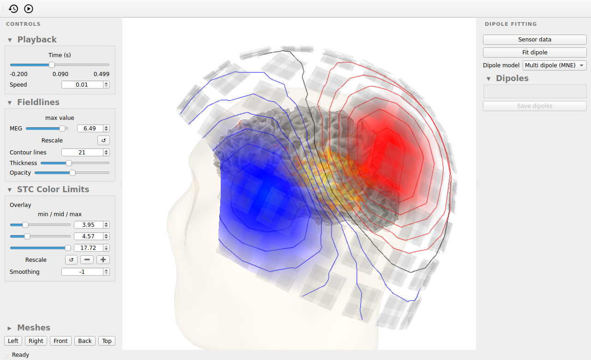
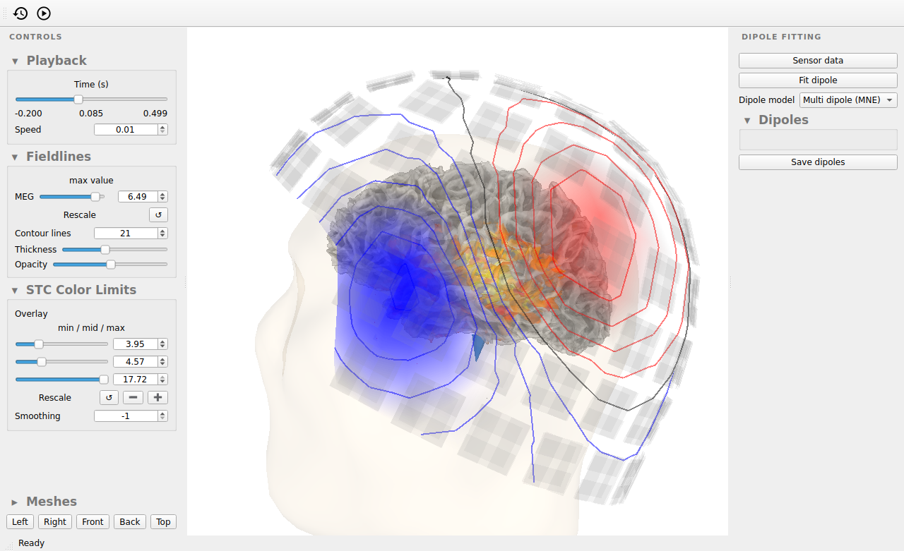
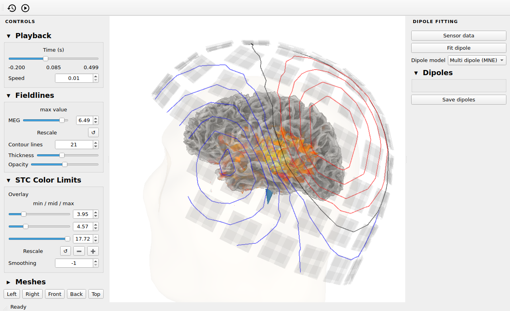
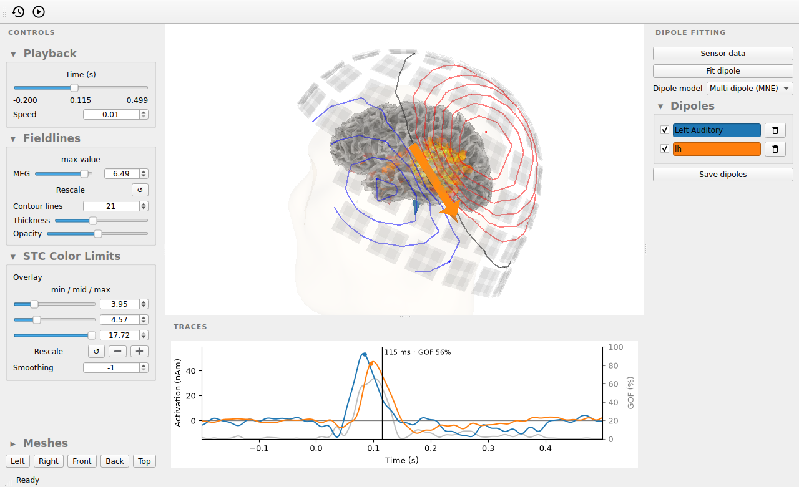

Note
Go to the end to download the full example code.
Source localization by guided equivalent current dipole (ECD) fitting#
This combination of manual specification and automated fitting is one of the oldest MEG
source estimation techniques [1]. We will manually identify where and
when dipole source are active, upon which the fitting algorithm will find the best
location for the source. The result is a sparse source estimate of several equivalent
current dipoles (ECDs) that together explain (most of) the MEG evoked response. ECDs are
especially suited for capturing individual components of an evoked response (e.g. N100m,
N400m, etc.). Once the set of ECDs has been established, their timecourses can be
computed for multiple Evoked objects, for example different experimental
conditions.
This tutorial will demonstrate how to fit ECDs using the interactive GUI and also how to drive that same GUI from Python code. Every screenshot below is of the same GUI window, so you can follow along how its state evolves as we go.
# Authors: The MNE-Python contributors.
# License: BSD-3-Clause
# Copyright the MNE-Python contributors.
Guided ECD fitting using the GUI#
Starting the GUI#
We can start the GUI from the command line by passing the mne dipolefit program
an evoked file (filename typically ends in *-ave.fif):
$ mne dipolefit sample_audvis-ave.fif
The GUI can also be started from an interactive python console. The minimal setup that
can be used to fit dipoles is an Evoked object and nothing else:
When only specifying an evoked object, the GUI shows the sensors, a spherical head
model and the electro-magnetic field recorded by the sensors, using an ad-hoc noise
covariance matrix. If we provide more information, we can create a more accurate head
model that provides better ECD fits and gives us more guidance for determining
sources. On the command line there are various options you can use to specify files
containing the covariance matrix, BEM model and MRI<->head transformation, see the
output of mne dipolefit --help. In an interactive python console, we can provide
the appropriate MNE-Python objects when starting the GUI:
import mne
path = mne.datasets.sample.data_path()
meg_dir = path / "MEG" / "sample"
subjects_dir = path / "subjects"
evoked = mne.read_evokeds(meg_dir / "sample_audvis-ave.fif", condition="Left Auditory")
evoked.apply_baseline()
cov = mne.read_cov(meg_dir / "sample_audvis-cov.fif")
bem = mne.read_bem_solution(
subjects_dir / "sample" / "bem" / "sample-5120-5120-5120-bem-sol.fif"
)
trans = mne.read_trans(meg_dir / "sample_audvis_raw-trans.fif")
# A distributed source estimate is a helpful guide for our dipole fits.
inv = mne.minimum_norm.read_inverse_operator(
meg_dir / "sample_audvis-meg-oct-6-meg-inv.fif"
)
stc = mne.minimum_norm.apply_inverse(evoked, inv)
# Open the GUI with a better head model.
fitting_gui = mne.gui.dipolefit(
evoked,
cov=cov,
bem=bem,
trans=trans,
stc=stc,
ch_type="meg", # only use MEG sensors for this tutorial
subject="sample",
subjects_dir=subjects_dir,
)

Reading /home/circleci/mne_data/MNE-sample-data/MEG/sample/sample_audvis-ave.fif ...
Read a total of 4 projection items:
PCA-v1 (1 x 102) active
PCA-v2 (1 x 102) active
PCA-v3 (1 x 102) active
Average EEG reference (1 x 60) active
Found the data of interest:
t = -199.80 ... 499.49 ms (Left Auditory)
0 CTF compensation matrices available
nave = 55 - aspect type = 100
Projections have already been applied. Setting proj attribute to True.
No baseline correction applied
Applying baseline correction (mode: mean)
366 x 366 full covariance (kind = 1) found.
Read a total of 4 projection items:
PCA-v1 (1 x 102) active
PCA-v2 (1 x 102) active
PCA-v3 (1 x 102) active
Average EEG reference (1 x 60) active
Loading surfaces...
Loading the solution matrix...
Three-layer model surfaces loaded.
Loaded linear collocation BEM solution from /home/circleci/mne_data/MNE-sample-data/subjects/sample/bem/sample-5120-5120-5120-bem-sol.fif
Reading inverse operator decomposition from /home/circleci/mne_data/MNE-sample-data/MEG/sample/sample_audvis-meg-oct-6-meg-inv.fif...
Reading inverse operator info...
[done]
Reading inverse operator decomposition...
[done]
305 x 305 full covariance (kind = 1) found.
Read a total of 4 projection items:
PCA-v1 (1 x 102) active
PCA-v2 (1 x 102) active
PCA-v3 (1 x 102) active
Average EEG reference (1 x 60) active
Noise covariance matrix read.
22494 x 22494 diagonal covariance (kind = 2) found.
Source covariance matrix read.
22494 x 22494 diagonal covariance (kind = 6) found.
Orientation priors read.
22494 x 22494 diagonal covariance (kind = 5) found.
Depth priors read.
Did not find the desired covariance matrix (kind = 3)
Reading a source space...
Computing patch statistics...
Patch information added...
Distance information added...
[done]
Reading a source space...
Computing patch statistics...
Patch information added...
Distance information added...
[done]
2 source spaces read
Read a total of 4 projection items:
PCA-v1 (1 x 102) active
PCA-v2 (1 x 102) active
PCA-v3 (1 x 102) active
Average EEG reference (1 x 60) active
Source spaces transformed to the inverse solution coordinate frame
Preparing the inverse operator for use...
Scaled noise and source covariance from nave = 1 to nave = 55
Created the regularized inverter
Created an SSP operator (subspace dimension = 3)
Created the whitener using a noise covariance matrix with rank 302 (3 small eigenvalues omitted)
Computing noise-normalization factors (dSPM)...
[done]
Applying inverse operator to "Left Auditory"...
Picked 305 channels from the data
Computing inverse...
Eigenleads need to be weighted ...
Computing residual...
Explained 59.4% variance
Combining the current components...
dSPM...
[done]
Noise covariance : <Covariance | kind : full, shape : (366, 366), range : [-1.3e-11, +5.1e-11], n_samples : 15972>
Getting helmet for system 306m
Automatic origin fit: head of radius 91.2 mm
Prepare MEG mapping...
Computing dot products for 305 coils...
Computing dot products for 304 surface locations...
Field mapping data ready
Preparing the mapping matrix...
Truncating at 85/305 components to omit less than 0.0001 (9.4e-05)
Read 0 source spaces a total of 0 active source locations
Coordinate transformation: MRI (surface RAS) -> head
0.999310 0.009985 -0.035787 -3.17 mm
0.012759 0.812405 0.582954 6.86 mm
0.034894 -0.583008 0.811716 28.88 mm
0.000000 0.000000 0.000000 1.00
Read 306 MEG channels from info
105 coil definitions read
Coordinate transformation: MEG device -> head
0.991420 -0.039936 -0.124467 -6.13 mm
0.060661 0.984012 0.167456 0.06 mm
0.115790 -0.173570 0.977991 64.74 mm
0.000000 0.000000 0.000000 1.00
MEG coil definitions created in head coordinates.
Employing the head->MRI coordinate transform with the BEM model.
BEM model is now set up
Checking surface interior status for 306 points...
Found 0/306 points inside an interior sphere of radius 79.1 mm
Found 0/306 points outside an exterior sphere of radius 161.3 mm
Found 306/306 points outside using surface Qhull
Found 0/ 0 points outside using solid angles
Total 0/306 points inside the surface
Interior check completed in 0.5 ms
Composing the field computation matrix...
Using control points [ 3.95048042 4.569413 17.72451426]
Channel types:: grad: 203, mag: 102
Fitting a dipole#
During guided ECD fitting, we look for patterns in the electro-magnetic field to identify when and where sources may be active. We can use the time slider to examine how the field changes over time. The sample data is an evoked response to an auditory tone being played to the left of the participant and we can see the initial auditory response peaking at around 85 ms on the right hemisphere. The field shows a typical di-polar pattern with a pair of red/blue focii on either side of the source that should be located in auditory cortex (the distributed source estimate shows where it is).
By pressing the “Fit dipole” button we instruct the algorithm to fit a dipole at the current time. After a few seconds of computation, the resulting dipole will be displayed as an arrow in the brain, indicating its source, as well as an arrow on the MEG helmet indicating the fit between the dipole and the field pattern. The timecourse of the dipole is shown below. On the right are controls to name, remove, temporarily (de-)activate, and save the dipole to a file. You also find a toggle switch to make the dipole’s orientation dynamic or keep it fixed at the orientation it had at the time when it was fitted.
Dragging the time slider and clicking the “Fit dipole” button have programmatic equivalents, which is what we will use here to build up the figures in this tutorial:
fitting_gui.set_time(0.085)
fitting_gui.fit_dipole()

Positions (in meters) and orientations
1 sources
Source spaces are in head coordinates.
Checking that the sources are inside the surface (will take a few...)
Checking surface interior status for 1 point ...
Found 0/1 points inside an interior sphere of radius 43.6 mm
Found 0/1 points outside an exterior sphere of radius 91.8 mm
Found 0/1 points outside using surface Qhull
Found 0/1 points outside using solid angles
Total 1/1 point inside the surface
Interior check completed in 0.5 ms
Computing MEG at 1 source location (free orientations)...
info["bads"] and noise_cov["bads"] do not match, excluding bad channels from both
Computing inverse operator with 305 channels.
305 out of 306 channels remain after picking
Selected 305 channels
No patch info available. The standard source space normals will be employed in the rotation to the local surface coordinates....
Changing to fixed-orientation forward solution with surface-based source orientations...
[done]
Whitening the forward solution.
Created an SSP operator (subspace dimension = 3)
Computing rank from covariance with rank='info'
MEG: rank 302 after 3 projectors applied to 305 channels
Setting small MEG eigenvalues to zero (without PCA)
Creating the source covariance matrix
Adjusting source covariance matrix.
Computing SVD of whitened and weighted lead field matrix.
largest singular value = 17.3781
scaling factor to adjust the trace = 8.51891e+15 (nchan = 305 nzero = 3)
Preparing the inverse operator for use...
Scaled noise and source covariance from nave = 1 to nave = 55
Created the regularized inverter
Created an SSP operator (subspace dimension = 3)
Created the whitener using a noise covariance matrix with rank 302 (3 small eigenvalues omitted)
Applying inverse operator to "Left Auditory"...
Picked 305 channels from the data
Computing inverse...
Eigenleads need to be weighted ...
Computing residual...
Explained 6.1% variance
[done]
Adjusting the 3D view#
Each dipole is drawn deep inside the head, so the “Meshes” panel on the left offers a visibility checkbox and an opacity slider for every surface (the cortex, the head, the MEG helmet, the sensors, and the colorbar of the distributed source estimate) to uncover whatever the fit needs. Underneath are buttons for the five standard views of the head. Both have programmatic equivalents:
fitting_gui.toggle_mesh("helmet", show=False)
fitting_gui.set_mesh_opacity("head", 0.1)

Selecting channels to guide the ECD modeling#
At nearly the same time, auditory responses are occurring in both left and right auditory cortex. Hence, the single dipole that we fitted without any guidance will have some bias as the algorithm attempted to fit the ECD to the entire bi-lateral field pattern.
To isolate portions of the field pattern that contain a single pair of red/blue focii,
the ideal fitting target for the algorithm, we can restrict the analysis to a subset
of sensors. To do so, first press the “Sensor data” button, which will open a new
window showing the evoked response across all sensors. By clicking and dragging the
mouse we can make a lasso selection around the sensors we wish to include in the
analysis. Hold CTRL to add to the current selection and CTRL + SHIFT to remove
from the current selection. The currently selected sensors are highlighted in green in
the main window, showing the portion of the field pattern they cover. When you are
happy with the selection, you can use the “Fit dipole” button as before to fit a
dipole using the selected sensors at the current timepoint.
Remove or de-activate the dipole we previously fitted to the entire field pattern and fit two dipoles using the left-side and right-side sensors respectively. It is helpful to name them. This part of the workflow is inherently interactive, so we cannot reproduce it here in code.
Multi/single dipole modes#
By default, the fitting algorithm is in “Multi dipole (MNE)” mode, meaning portions of the signal attributed to one dipole can not be attributed to a second dipole at the same time. You will notice that if you have two dipoles with similar orientations close to each other, their timecourses become a strange mixture as each dipole will claim a part of the same signal. To prevent this, we can switch the algorithm over to “Single dipole” using the “Dipole model” dropdown. In this mode, the timecourse of each dipole will be computed whilst ignoring all other dipoles, which is useful when evaluating multiple candidate dipoles for the same source.
Saving and loading sets of dipoles#
We can save the fitted dipoles using the “Save dipoles” button. There are two possible
file formats for this: plain text (.dip) and a binary format (.bdip). These
formats are compatible with MEGIN’s software, allowing interoperability between
MNE-Python and Xfit. Saved dipoles can be read back with mne.read_dipole() and
added to an existing dipole fitting GUI, optionally under a name of our choosing.
Here, we add the dipole that a lasso selection of the left-side sensors would have
produced:
dips_to_add = mne.read_dipole(meg_dir / "sample_audvis_set1.dip")
dips_to_add = dips_to_add[[33]] # add only one of the 34 dipoles in the file
fitting_gui.add_dipole(dips_to_add, name="lh")
34 dipole(s) found
Positions (in meters) and orientations
2 sources
Source spaces are in head coordinates.
Checking that the sources are inside the surface (will take a few...)
Checking surface interior status for 2 points...
Found 0/2 points inside an interior sphere of radius 43.6 mm
Found 0/2 points outside an exterior sphere of radius 91.8 mm
Found 0/2 points outside using surface Qhull
Found 0/2 points outside using solid angles
Total 2/2 points inside the surface
Interior check completed in 0.6 ms
Computing MEG at 2 source locations (free orientations)...
info["bads"] and noise_cov["bads"] do not match, excluding bad channels from both
Computing inverse operator with 305 channels.
305 out of 306 channels remain after picking
Selected 305 channels
No patch info available. The standard source space normals will be employed in the rotation to the local surface coordinates....
Changing to fixed-orientation forward solution with surface-based source orientations...
[done]
Whitening the forward solution.
Created an SSP operator (subspace dimension = 3)
Computing rank from covariance with rank='info'
MEG: rank 302 after 3 projectors applied to 305 channels
Setting small MEG eigenvalues to zero (without PCA)
Creating the source covariance matrix
Adjusting source covariance matrix.
Computing SVD of whitened and weighted lead field matrix.
largest singular value = 14.3806
scaling factor to adjust the trace = 2.60588e+16 (nchan = 305 nzero = 3)
Preparing the inverse operator for use...
Scaled noise and source covariance from nave = 1 to nave = 55
Created the regularized inverter
Created an SSP operator (subspace dimension = 3)
Created the whitener using a noise covariance matrix with rank 302 (3 small eigenvalues omitted)
Applying inverse operator to "Left Auditory"...
Picked 305 channels from the data
Computing inverse...
Eigenleads need to be weighted ...
Computing residual...
Explained 18.0% variance
[done]
Working with the dipoles from Python#
Although each dipole is fitted at a single time point, its timecourse is estimated
across the entire epoch, so we can move the time cursor to any latency to inspect the
dipole model there. The dipoles themselves are available as a list of
mne.Dipole objects and can be saved without touching the GUI at all:
fitting_gui.set_time(0.115)
fitted_dipoles = fitting_gui.dipoles # the dipoles we fitted
print([dip.name for dip in fitted_dipoles])
# save with: fitting_gui.save("my_file.dip")

['Left Auditory', 'lh']
References#
Total running time of the script: (0 minutes 35.806 seconds)